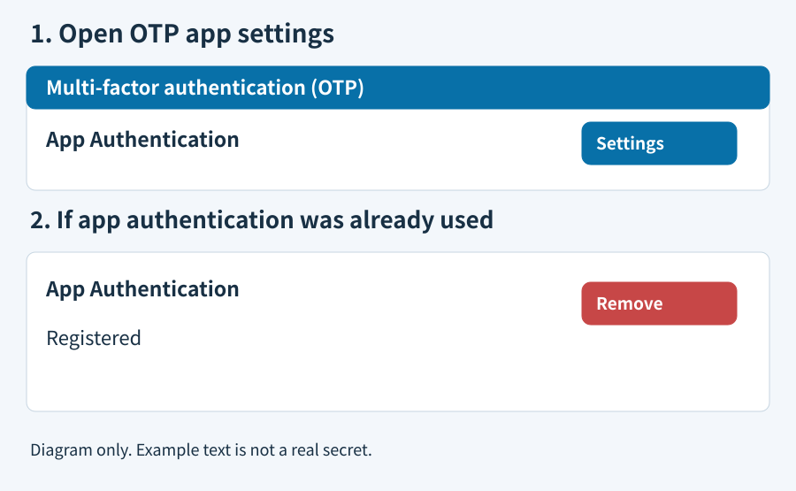
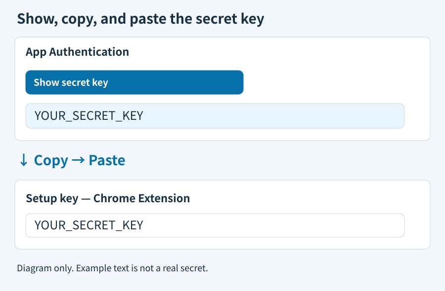
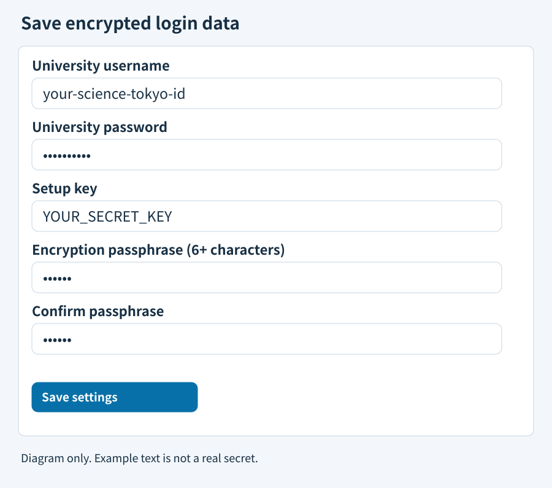

Open extension settings · Official university guide
University portal → OTP → App Authentication → Settings.

Click Show secret key, then copy the string into the extension's Setup key field. No QR scan is needed.

Optionally add your university username and password, then Save. After that, opening https://isct.ex-tic.com/auth/session fills in each step.

If the university asks for a code, enter the six-digit code shown in extension settings and click Settings to finish enrollment.
Only if you have no valid key, click Remove and enroll again. The old key stops working.